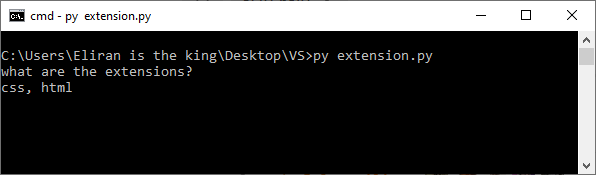
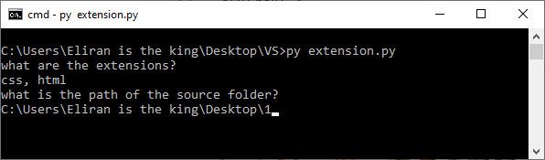
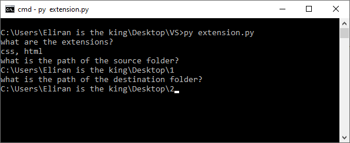
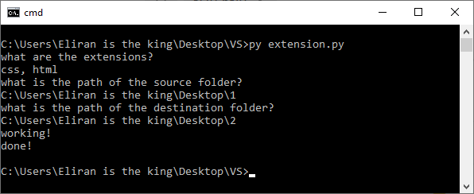

אהלן חברים,
כל התחיל כשסיימתי את שיעורי הבית של שבוע 11 ולכל תרגיל יצרתי 2 קבצים האחד css והשני html.
אחרי שסיימתי את כל התרגילים, הכתה בי הארה שאפשר להגיש רק קובץ אחד לכל תרגיל (תוציאו רגע את zip גם בזה נזכרתי מאוחר יותר).
אז עברתי כל קובץ html והוספתי את התגית style ולשם הדבקתי את הקוד של ה-css - ככה ל-50 תרגילים.
ופתאום אני מוצא את עצמי מול בערך 100 קבצים וצריך לשלוף רק את הקבצי html בכדי לעלות אותם לבודק האוטומטי.
ואז אמרתי לעצמי, אין מצב שאני עושה עוד עבודה סיזיפית אחרי שהעתקתי את כל קבצי ה-css ל-html.
אז בניתי קוד בפייתון שיוצר תיקייה לכל סיומת של קובץ.
אני חושב שזה יכול להיות שימושי לעוד אנשים פה.
אז הקוד מצורף למטה, ועכשיו הסבר על איך הקוד עובד (עם תמונות!):
החלטתי לקרוא לקובץ extention.py, מוזמנים לבחור שמות פחות גנריים.
אז כמו שאתם רואים יש הרבה קבצים בתיקייה (100 items):
הרצתי את הקוד ב-cmd, גם vscode יעבוד מעולה.
שאלה ראשונה שנשאל מהקוד - מה הם הסיומות הרלוונטים שאנחנו רוצים ליצור עבורם תיקייה, במקרה שלנו css, html
*בין כל 2 סיומות חייב להיות פסיק.

נקליק enter
שאלה שניה שנשאל - מה נתיב המקור של הקבצים שאנחנו מעוניינים לקטלג:

נקליק enter
שאלה אחרונה שנשאל - מה נתיב היעד ששם יווצרו תיקיות לכל סיומת שציינו בשאלה הראשונה:

נקליק enter

והנה התוצאה - שימו לב שהקוד לא יצר תיקיות לסיומות rar txt שהיו בתיקייה 1 כי לא ציינו אותן בשאלה הראשונה.
בהשראת שבוע 10
הקוד כנראה לא מושלם ולא הכי יעיל אבל הוא עושה את העבודה, מוזמנים לשפר ולהוסיף פיצרים לקוד וכמובן לשתף.
import os
from shutil import copy
print("what are the extensions?")
take = input()
extensions_temp = take.split(",")
extensions = set()
for i in extensions_temp:
if i[0] != ".":
extensions.add("." + i.strip().lower())
else:
extensions.add(i.strip().lower())
print("what is the path of the source folder?")
source = input()
if not os.path.exists(source):
raise("the path does not exsit")
print("what is the path of the destination folder?")
destination = input()
if not os.path.exists(destination):
raise("the path does not exsit")
print("working!")
os.chdir(source)
for i in os.listdir():
if os.path.isfile(i):
extension = os.path.splitext(i)[1].lower()
if extension in extensions:
if not os.path.exists(os.path.join(destination, extension)):
os.chdir(destination)
os.mkdir(extension)
os.chdir(source)
copy(os.path.join(source, i), os.path.join(destination, extension))
print("done!")
{kind=link}
{kind=link}
{kind=link}
{kind=link}